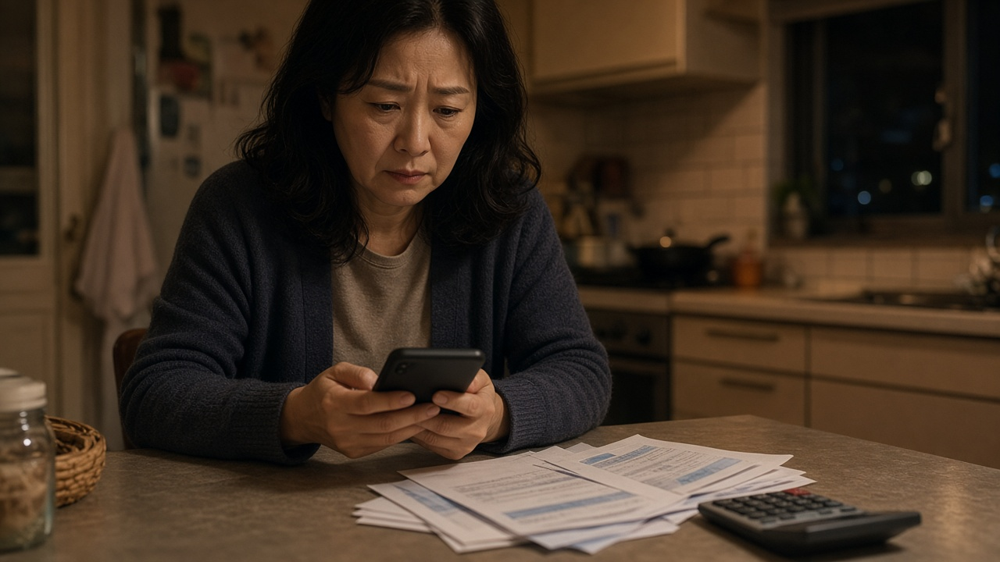
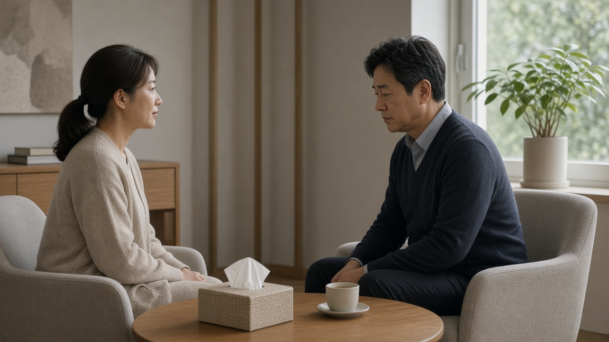

보이스피싱 피해자 생계비 최대 200만 원, 11월 23일부터 굿네이버스로 신청받아요

보이스피싱을 당하고 나면 돈을 잃은 것도 힘든데, 내가 왜 속았을까 하는 자책 때문에 주변에 말도 못 하고 혼자 버티는 분들이 많아요.
피해금 환급은 절차가 길고, 그사이 당장 생활비가 막막해지는 경우도 적지 않죠.
이번에 금융감독원과 금융협회들이 피해자의 생활비와 마음 회복을 함께 돕는 시범 사업을 시작했어요.
누가 받을 수 있는지, 얼마를 어떻게 받는지, 무엇을 준비해야 하는지 차례로 정리해 볼게요.
금감원과 금융권이 함께 여는 피해자 회복 지원, 이름은 다시 일상으로예요
금융감독원은 11월 9일 은행연합회, 여신금융협회, 저축은행중앙회, 사회복지법인 굿네이버스와 업무협약을 맺고 보이스피싱 피해자 지원 사업 다시 일상으로를 시작한다고 밝혔어요.
사업 기간은 이달부터 2027년 10월까지 약 1년이고, 예산이 먼저 바닥나면 기간이 줄어들 수 있어요.
지원 규모는 200명 안팎이라 대상이 넓지 않으니, 해당되는 분은 신청이 열리자마자 서두르는 편이 좋아요.
금감원은 이번 시범 운영 결과를 보고 금융권 전체로 사업을 넓히겠다는 계획도 함께 밝혔어요.
지원 대상은 2024년 이후 피해를 입은 중위소득 150퍼센트 이하 가구예요
조건은 두 가지예요.
최근 3년 이내, 그러니까 2024년 이후에 보이스피싱 피해를 입었어야 하고, 가구 소득이 가구별 중위소득의 150퍼센트 이하여야 해요.
피해 시점이 2023년 이전이라면 이번 시범 사업에서는 대상이 되지 않아요.
신청서를 내면 심사를 거쳐 지원 대상자를 고르고 한 분씩 따로 안내한다고 하니, 신청했다고 바로 확정되는 것은 아니라는 점도 알아 두세요.

생계비는 두 번에 나눠 최대 200만 원, 피해 금액을 넘지는 않아요
생계비는 1인당 최대 200만 원 안에서 두 차례로 나눠 지급돼요.
먼저 긴급 생계비로 최대 100만 원을 지급하고, 전문 심리상담 6회를 모두 마치면 최대 100만 원을 더 받는 방식이에요.
여기서 꼭 짚어 둘 점은 생계비가 피해 금액을 넘을 수 없다는 거예요.
예를 들어 피해 금액이 80만 원이었다면 받을 수 있는 생계비도 그 범위 안에서 정해진다는 뜻이에요.
상담을 끝까지 받아야 두 번째 생계비가 나오니, 1차 지급 뒤에도 상담 일정을 챙기는 것이 실제 금액을 좌우해요.
심리상담 최대 6회, 트라우마 치료가 필요하면 병원 연계까지 돼요
심리상담은 전국의 연계 기관을 통해 1인당 최대 6회까지 받을 수 있어요.
상담만으로 어려울 만큼 트라우마가 깊다면 치료가 가능한 병원을 연결해 주고, 상담비와 치료비를 생계비와는 별도로 최대 200만 원 범위에서 함께 지원해요.
금감원이 이렇게 마음 회복까지 넣은 이유는 수법이 바뀌었기 때문이에요.
올해 상반기 보이스피싱은 7천33건, 피해액은 3천276억 원으로 지난해 같은 기간보다 각각 61퍼센트, 52.3퍼센트 줄었지만, 검찰이나 금감원을 사칭해 피해자를 며칠에서 몇 주씩 외부와 떼어 놓는 식으로 수법은 더 교묘해졌어요.
범인이 피해자를 모텔 같은 숙박업소에 스스로 머물게 만들고 원격 제어로 돈을 빼 가는 이른바 셀프 감금 수법도 나타났다고 해요.
신청은 11월 23일부터, 사건사고사실확인원과 소득 증빙을 미리 챙기세요
신청은 11월 23일부터 굿네이버스 사무국을 통해 받아요.
신청서와 함께 경찰에서 발급하는 사건사고사실확인원, 중위소득 이하임을 보여 주는 소득 증빙 서류를 내야 해요.
경찰서와 금융협회 등에서도 온라인과 오프라인으로 사업을 안내할 예정이라, 피해 신고를 했던 경찰서에 먼저 문의해 보는 것도 방법이에요.
지원금이나 상담을 미끼로 링크를 누르게 하거나 수수료를 요구하는 연락은 이 사업과 관계가 없으니, 출처가 불분명한 문자의 주소는 누르지 마시고 의심되는 전화는 끊은 뒤 1394로 확인하세요.
이 글은 11월 11일 기준 공개된 내용을 정리한 정보이고, 세부 서류와 접수 방법은 신청 시작 뒤 굿네이버스 사무국 안내를 다시 확인하세요.
참고 자료 금융감독원 2026년 11월 9일 보이스피싱 피해자 지원 업무협약 발표, 연합뉴스 2026년 11월 9일 보이스피싱 심리적 피해도 심각 금감원 금융권과 피해자 지원, 전자신문 2026년 11월 9일 금융권 보이스피싱 피해자에 생계비 최대 200만원, 뉴스핌 2026년 11월 9일 금감원 금융권 보이스피싱 피해자에 최대 200만원 생계비 지원, 연합뉴스 2026년 11월 6일 금융위 개인정보 유출 특별대응 연장
태그 보이스피싱 보이스피싱피해자지원 생계비지원 다시일상으로 금융감독원 굿네이버스 심리상담지원 사건사고사실확인원 중위소득150 보이스피싱피해구제